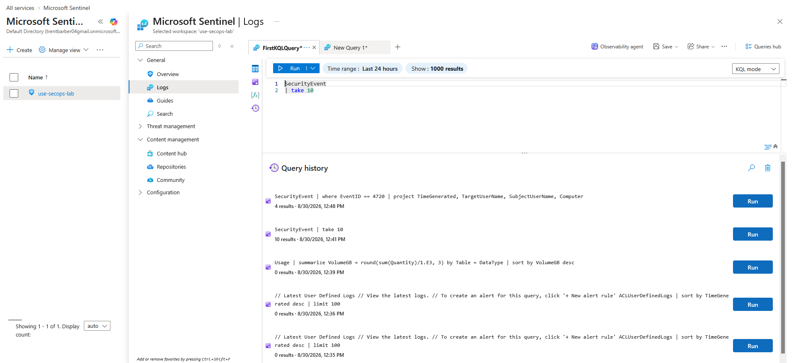
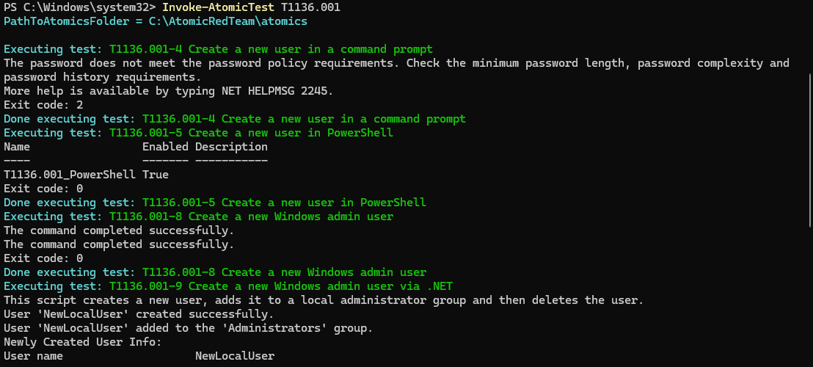
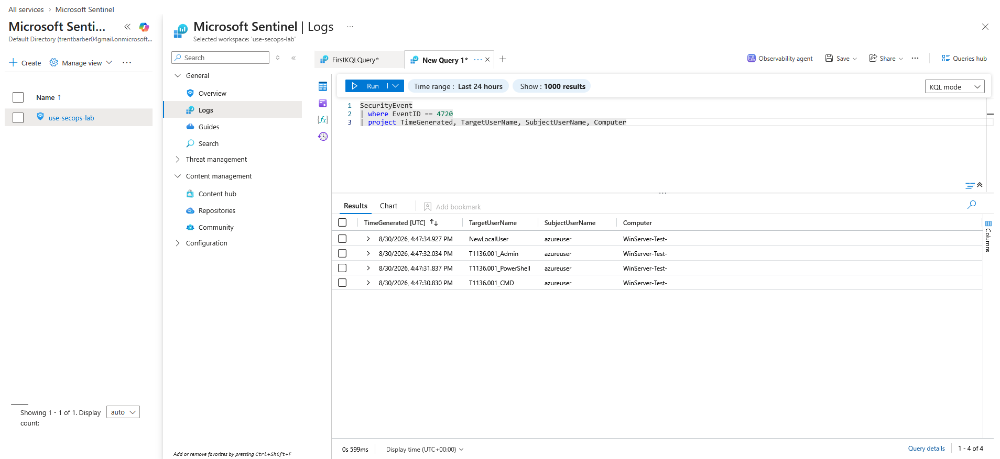
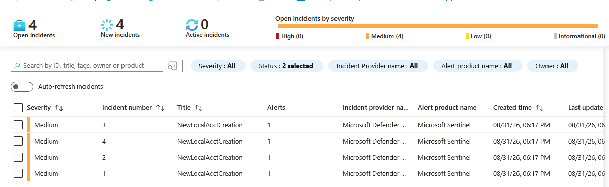
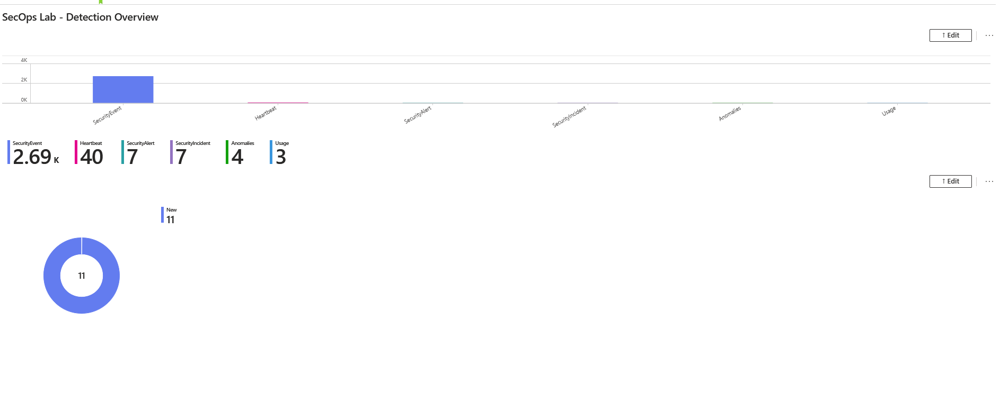

Category: SIEM / Detection Engineering / Blue Team Environment: Azure (free tier) — Log Analytics workspace, Microsoft Sentinel, Windows Server VM Objective: Build a working SOC detection pipeline from scratch — ingest real telemetry, write detection logic in KQL, simulate an attack technique, and confirm the full alert-to-incident workflow — then surface it in a dashboard.
1. Environment Setup
Built the lab entirely on Azure's free tier:
- Log Analytics workspace (
use-secops-lab) — the central data store for all ingested logs - Microsoft Sentinel enabled on top of that workspace
- Windows Server VM (
WinServer-Test-) deployed as the monitored endpoint - Data Collection Rule using the "Windows Security Events via AMA" connector, installing the Azure Monitor Agent on the VM and streaming Windows Security event logs into the workspace
Kept cost low by stopping/deallocating the VM whenever it wasn't actively being used — Sentinel, the workspace, and all ingested data stay intact and cost nothing extra while the VM is off.
2. Confirming Ingestion
Before building any detections, first confirmed logs were actually flowing by running a baseline query in Sentinel's Logs blade:
SecurityEvent
| take 10

Getting rows back here confirmed the full pipeline — VM → Azure Monitor Agent → Data Collection Rule → Log Analytics workspace — was working end to end before writing any actual detection logic.
3. Simulating an Attack Technique
Rather than manually creating test data, used Invoke-AtomicRedTeam (Red Canary's open-source attack simulation framework, mapped to MITRE ATT&CK) to generate a realistic, repeatable event on the VM.
Ran T1136.001 — Create Local Account, a common persistence technique:
Set-ExecutionPolicy Bypass -Scope Process -Force
Import-Module "C:\AtomicRedTeam\invoke-atomicredteam\Invoke-AtomicRedTeam.psd1" -Force
Invoke-AtomicTest T1136.001

This single technique runs through several sub-tests — creating a local user via cmd, PowerShell, and as a Windows admin — each one generating a genuine Event ID 4720 (a new local account was created) on the VM, exactly as a real attacker establishing persistence would.
4. Writing the Detection Query
With real 4720 events now landing in SecurityEvent, wrote a KQL query to surface them cleanly:
SecurityEvent
| where EventID == 4720
| project TimeGenerated, TargetUserName, SubjectUserName, Computer

The results show each account created during the atomic test run (NewLocalUser, T1136.001_Admin, T1136.001_PowerShell, T1136.001_CMD) — proof the detection logic correctly isolates the exact behavior the attack simulation produced.
5. Building the Analytics Rule
Converted the manual query into an automated Scheduled Query Rule in Sentinel Analytics:
- Name:
NewLocalAcctCreation - Severity: Medium
- Query: the EventID 4720 query above
- Entity mapping:
TargetUserName→ Account,Computer→ Host (so incidents show proper context in the investigation graph) - Schedule: every 5 minutes, looking back over the last 5 minutes
- Threshold: trigger when results > 0
- Incident creation: enabled
6. Confirming the Full Alert-to-Incident Pipeline
Re-ran the atomic test to generate fresh account-creation events, and within one scheduling cycle, Sentinel correctly fired the rule and generated incidents:

Each atomic sub-test that created an account produced its own incident — confirming the detection isn't just matching historical data, but actively catching new activity as it happens, the same way a production SOC rule would.
7. Building the Detection Overview Workbook
Finally, built a Sentinel Workbook to visualize the lab's activity in one place — table volumes by type, incident status breakdown, and a running count of new incidents:

This turns raw detection data into something a SOC lead or stakeholder could actually glance at — which is as much a part of the job as writing the detection logic itself.
Key Takeaways
- Building the pipeline is half the job — a detection rule is only as good as the ingestion path behind it. Verifying data at each stage (agent installed → DCR active → raw query returns rows → detection query isolates the right events) catches problems early instead of debugging a "silent" rule later.
- Attack simulation tools like Atomic Red Team make detection engineering testable. Rather than guessing whether a rule "should" work, you can generate the exact technique it's meant to catch and verify it end-to-end — the same validation loop real detection engineers use before shipping a rule to production.
- KQL scheduling windows matter. A rule's lookback period has to realistically cover the gap between scheduled runs, or genuine detections can be missed simply due to timing — a good reminder that tuning a rule doesn't stop once the query logic is "correct."
- Dashboards close the loop. A detection that only a query author can see doesn't help a team. A workbook turns individual incidents and log volumes into a shared, at-a-glance view of what's actually happening in the environment.